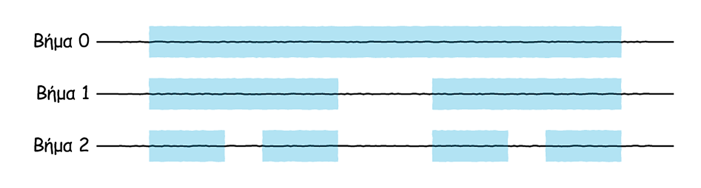
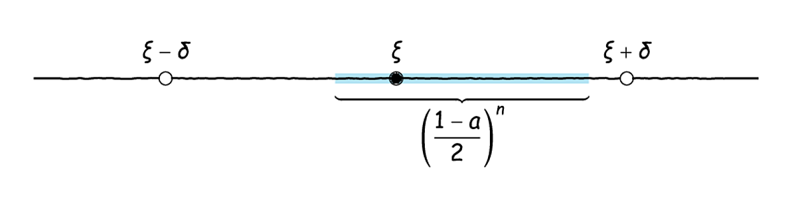
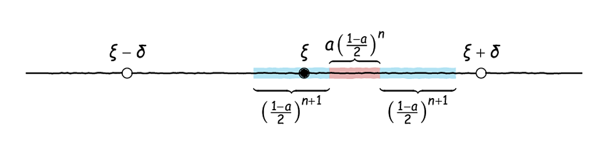
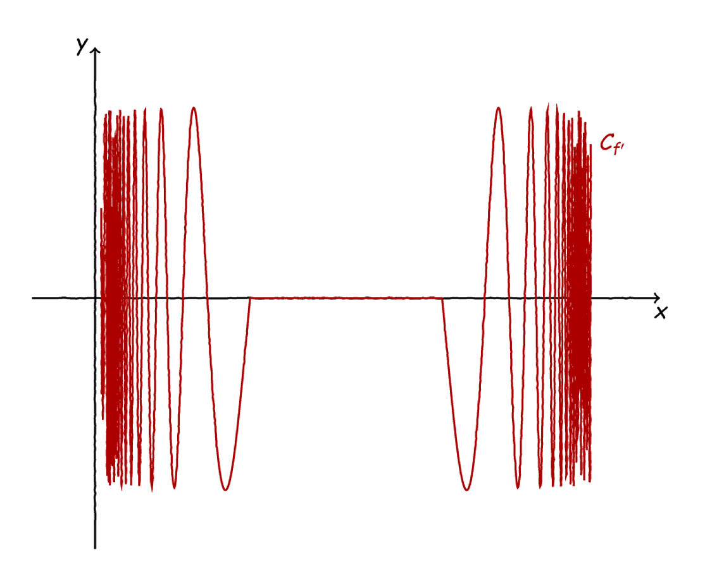
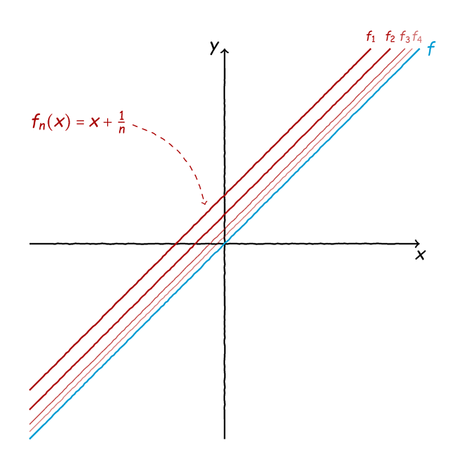
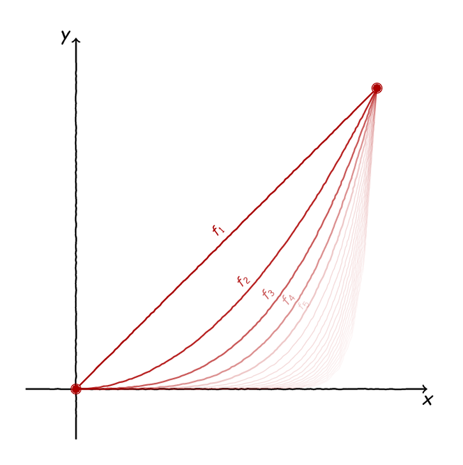
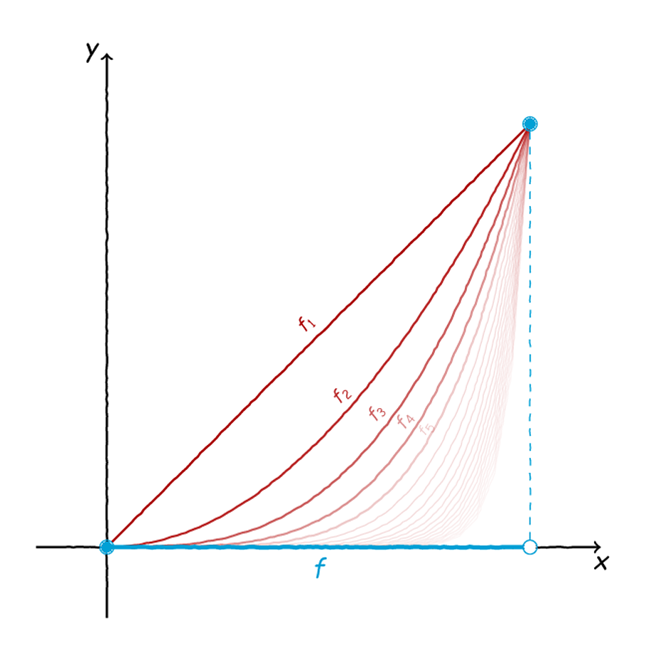
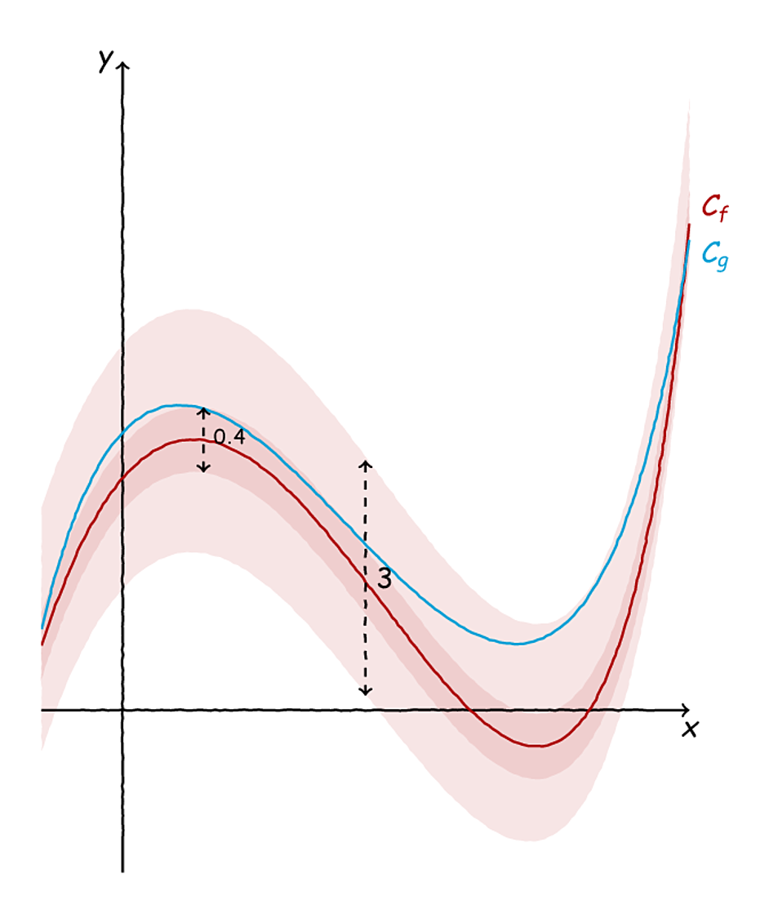
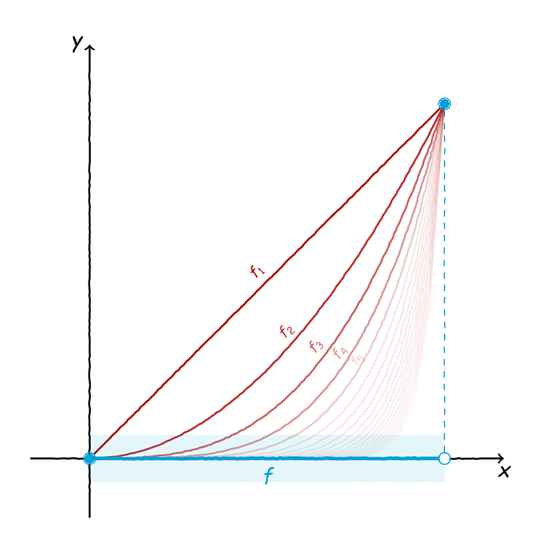

Η Ομορφότερη Παράγωγος;#
Ο πίνακας Ηλικιωμένη γυναίκα τηγανίζει αυγά του Diego Velázquez.#
Κουραστήκαμε την προηγούμενη εβδομάδα, αλλά άξιζε τον κόπο - εντάξει, τώρα η αξία και ο κόπος είναι έννοιες υποκειμενικές, αλλά, για να είστε εδώ, άξιζε τον κόπο. Συνοψίζοντας, ανασύραμε από το παρελθόν ένα σημαντικό και ζουμερό ερώτημα. Πιο συγκεκριμένα, αναρωτηθήκαμε αν υπάρχει συνάρτηση που να ικανοποιεί όλα τα παρακάτω:
Να είναι παραγωγίσιμη σε κάποιο διάστημα.
Να έχει φραγμένη παράγωγο.
Να μην είναι ολοκληρώσιμη η παράγωγός της.
Για να δώσουμε απάντηση σε αυτό το ζουμερό ερώτημα, διατυπώσαμε έναν πολύ σημαντικό και κομψό χαρακτηρισμό για τις ολοκληρώσιμες συναρτήσεις: είναι ακριβώς αυτές που είναι το πολύ «λίγο» ασυνεχείς. Το πόσο λίγο μας το περιέγραψε αυστηρά ο Lebesgue, με τη βοήθεια του μέτρου του, λέγοντάς μας ότι το σύνολο των ασυνεχειών μίας ολοκληρώσιμης συνάρτησης πρέπει και αρκεί να έχει μηδενικό μέτρο.
Έχοντας ξεκαθαρίσει τα παραπάνω, φτιάξαμε μία συνάρτηση που:
Ήταν παραγωγίσιμη στο κλειστό διάστημα \([0,1]\) .
Είχε φραγμένη παράγωγο.
Η παράγωγός της ήταν ασυνεχής σε ένα σύνολο που λέγεται σύνολο Cantor (θα το ξαναπιάσουμε αυτό).
Το σύνολο Cantor, μέσα στα πολλά παράδοξά του, ενώ έχει πολλά στοιχεία - όσα και οι πραγματικοί αριθμοί - έχει μέτρο Lebesgue ίσο με το μηδέν. Επομένως, όσο μελάνι χύθηκε για να γραφτούν τα παραπάνω χύθηκε εις μάτην.
Όμως, τι κάνουμε στα μαθηματικά όταν οι προσπάθειές μας αποτυγχάνουν; - [STRIKEOUT:τα παρατάμε]. Αλλάζουμε λίγο οπτική γωνία - άλλωστε, τα μαθηματικά είναι ένα χάος από μόνα τους, ευαίσθητα σε μικρές αλλαγές θα λέγαμε, εκνευρίζοντας λίγο τους φυσικούς…
Αν ταΐσουμε τον Cantor;#
Όπως είδαμε παραπάνω, τα κάναμε όλα τέλεια, εκτός από το πού ήταν ασυνεχής η παράγωγός μας. Αν είχαμε καταφέρει να την κατασκευάσουμε έτσι ώστε να είναι ασυνεχής σε ένα λίγο πιο παχύ σύνολο, τότε θα είχαμε λύσει το πρόβλημά μας. Όμως, θα θέλαμε κι ένα σύνολο που να είναι και λίγο ιδιότροπο, όπως αυτό του Cantor, γιατί εκμεταλλευτήκαμε πολλές ιδιότητές του για να «αποδείξουμε» την ασυνέχεια της παραγώγου. Ας θυμηθούμε κάπως αναλυτικότερα την κατασκευή αυτού του συνόλου, μπας και μας έρθει καμία ιδέα.
Όπως είπαμε και την προηγούμενη φορά, ξεκινάμε από το κλειστό διάστημα \([0,1]\) και αρχίζουμε και πετάμε κομμάτια όπως παρακάτω:

Βήμα 1ο στον δρόμο για τον Cantor…#
Τα κομμάτια που πετάμε είναι πάντοτε τα μεσαία τρίτα των διαστημάτων που μας έχουν απομείνει. Έτσι, μετά το δεύτερο βήμα, το σύνολο που θα έχουμε στα χέρια μας θα μοιάζει κάπως έτσι:

Βήμα 2ο στον δρόμο για τον Cantor…#
Καθώς προχωράμε μας μένουν όλο και λιγότεροι πραγματικοί αριθμοί, όπως φαίνεται και παρακάτω:

Πολλά βήματα προς τον Cantor…#
Το γεγονός ότι «χάνουμε» πράγματα καθώς προχωράμε έπρεπε να μας έχει κάνει λίγο πιο καχύποπτους ως προς το μέγεθος του συνόλου Cantor τελικά, αλλά δεν πειράζει, γι” αυτό είμαστε εδώ τώρα. Αν μπορούσαμε να δώσουμε λίγο όγκο σε αυτό το ρημάδι το σύνολο - χωρίς να χαλάσει τίποτα άλλο - όλα θα έρθουν όπως τα θέλουμε. Αλλά, πώς μπορούμε να «ταΐσουμε» τον Γιώργη τον Cantor - Georg, για τους γερμανομαθείς - να πάρει λίγο τα πάνω του στα μάτια του Lebesgue;
Η ιδέα, όπως πάντα λέμε εκ των υστέρων στα μαθηματικά, είναι πολύ απλή. Θα αφαιρέσουμε μικρότερα κομμάτια. Ας πούμε, αντί για το μεσαίο τρίτο, θα αφαιρούμε το μεσαίο πέμπτο - γιατί έτσι μας αρέσει, χωρίς σαφή λόγο. Έτσι, έχουμε μία σχηματική αναπαράσταση σαν την παρακάτω:

Λίγα βήματα από την κατασκευή ενός καλοταϊσμένου συνόλου Cantor.#
Σαφώς, τα πράγματα εδώ είναι κάπως καλύτερα - και πιο «παχιά». Θα ανέμενε κανείς, λοιπόν, από αυτή τη διαδικασία, να μας μείνει στο τέλος κάτι περισσότερο από ένα σύνολο μέτρου μηδέν. Όπως και την προηγούμενη φορά, θα υπολογίσουμε το μέτρο του παχιού συνόλου Cantor αφαιρώντας από τη μονάδα (δηλαδή, το μέγεθος του \([0,1]\) ) το συνολικό μήκος των διαστημάτων που πετάμε, δηλαδή, με το ίδιο σκεπτικό που αναπτύξαμε την προηγούμενη φορά (δηλαδή, στο \(n\) -οστό βήμα πετάμε \(2^{n-1}\) διαστήματα μήκους \(1/5^n\) ):
Συνεπώς, αυτό που μας απομένει έχει μέτρο Lebesgue ίσο με:
Δηλαδή, το παραπάνω πιο παχύ σύνολο Cantor είναι όντως μεγάλο, καθώς έχει μέτρο \(2/3\) - σε αντίθεση με το μέτρο του τυπικού συνόλου Cantor που είναι μηδέν.
Μάλιστα, δε χρειάζεται να σταματήσουμε εδώ. Μπορούμε να αφαιρούμε κάθε φορά ένα κεντρικό τμήμα που να αντιστοιχεί σε ένα κλάσμα \(a\in(0,1/3)\) κάθε διαστήματος που έχει απομείνει. Έτσι, σε κάθε βήμα αφαιρούμε \(2^{n-1}\) διαστήματα μήκους \(a^n\) το καθένα, οπότε συνολικά αφαιρούμε:
Έτσι, το αντίστοιχο παχύ σύνολο Cantor που θα προκύψει θα έχει μέτρο Lebesgue:
Αν παίξετε λίγο με την παραπάνω παράσταση για \(a\in(0,1/3)\) τότε εύκολα μπορείτε να δείτε ότι:
Επίσης, θα παρατηρήσετε και ότι:
Επομένως, μπορούμε να κατασκευάσουμε ένα σύνολο Cantor που να είναι οσοδήποτε παχύ θέλουμε. Αυτά τα σύνολα Cantor θα τα λέμε \(\varepsilon\) -σύνολα Cantor, με το \(\varepsilon\in(0,1)\) να εκφράζει το μέτρο Lebesgue τους.
Επιστροφή στις Κατασκευές#
Τώρα που χόρτασε ο Cantor, μπορούμε να επιστρέψουμε στην κατασκευή μας. Είχαμε κλείσει το προηγούμενο μέρος λέγοντας ότι αν μπορούσαμε να φτιάξουμε ένα σύνολο σαν του Cantor αλλά με λίγο «ψαχνό» τότε θα είχαμε ξεμπερδέψει. Είναι όμως έτσι; Με άλλα λόγια, μπορούμε να επαναλάβουμε όλη την κατασκευή που κάναμε και την προηγούμενη φορά; Μήπως αυτά τα πιο μεγάλα σύνολα Cantor μας κάνουν τη ζωή πιο δύσκολη;
Ας τα πιάσουμε συνοπτικά από την αρχή. Η όλη ιστορία ξεκίνησε με την ακόλουθη συνάρτηση, ορισμένη εν προκειμένω στο \([0,1]:\)

Τη θυμάστε;#
Με βάση το παραπάνω σχήμα, μπορούμε να ζωγραφίσουμε τέτοιες συναρτήσεις σε κάθε διάστημα. Για την ακρίβεια, αν έχουμε ένα κλειστό διάστημα \([a,b],\) τότε μία συνάρτηση με γραφική παράσταση σαν την παραπάνω έχει τον ακόλουθο τύπο:
Παραπάνω, το \(c\) είναι μία θέση τοπικού ακροτάτου της \((x-a)^2\sin\frac{1}{x-a}\) στο \((a,\frac{a+b}{2})\) (δηλαδή στο πρώτο μισό του διαστήματος). Αντίστοιχα, το \(d\) είναι το συμμετρικό του \(c\) ως προς το \(\frac{a+b}{2}.\) Τέλος, το \(C\) είναι η τιμή της \((x-a)^2\sin\frac{1}{x-a}\) στο \(c\) - δηλαδή, η τιμή της στο τοπικό ακρότατο. Αν παίξετε με το παραπάνω θα δείτε ότι όντως μία συνάρτηση με τον παραπάνω τύπο έχει γραφική παράσταση όπως αυτή που ζωγραφίσαμε παραπάνω.
Στα δικά μας τώρα, είχαμε εκμεταλλευτεί την προηγούμενη φορά το γεγονός ότι το πλήθος των διαστημάτων που αφαιρούμε κατά την κατασκευή του συνόλου Cantor είναι αριθμήσιμο και, συνεπώς, μπορούμε να το βάλουμε σε μία «σειρά». Αυτό είναι κάτι που δεν αλλάζει και στην κατασκευή ενός «ταϊσμένου» συνόλου Cantor. Επομένως, ας πάρουμε ένα σύνολο Cantor με μέτρο \(\varepsilon\in(0,1),\) ας το πούμε \(C_\varepsilon,\) και ας θεωρήσουμε τα διαστήματα που πετάξαμε, έστω \((a_n,b_n).\) Τότε, μπορούμε να ορίσουμε συναρτήσεις \(f_n\) όπως παραπάνω, στα αντίστοιχα κλειστά διαστήματα \([a_n,b_n]\) οι οποίες και να έχουν όλες αυτές τις καλές ιδιότητες. Έτσι, μπορούμε ξανά να κατασκευάσουμε μία συνάρτηση \(f\) ως εξής:
\(f(x)=f_n(x)\) για κάθε \(x\in[a_n,b_n]\) και κάθε \(n=1,2,\ldots,\)
\(f(x)=0\) για κάθε άλλο \(x\in[0,1].\)
Μπορούμε εύκολα να δούμε, δεδομένου ότι \(f(a_n)=f(b_n)=f'(a_n)=f'(b_n)=0\) ότι η παραπάνω συνάρτηση είναι:
Παραγωγίσιμη στο \([0,1].\)
Η παράγωγος είναι φραγμένη, γιατί είτε είναι μηδέν είτε είναι κάποια από τις \(f_n'\) που είναι όλες τους ομοιόμορφα φραγμένες (δηλαδή, από τον ίδιο αριθμό), για παράδειγμα από το 1.
Η παράγωγος είναι συνεχής εκτός του \(C_\varepsilon\) και ασυνεχής στα \(a_n,b_n.\)
Αυτό που δεν είναι άμεσα προφανές είναι ότι η \(f'\) είναι ασυνεχής σε όλο το \(C_\varepsilon.\) Όταν είχαμε στα χέρια μας ένα «ισχνό» σύνολο Cantor, όπως την προηγούμενη φορά, επικαλεστήκαμε στην ουσία το πόσο μικρό ήταν αυτό το σύνολο, για να αποδείξουμε κάπως διαισθητικά την ασυνέχεια της παραγώγου σε αυτό. Τώρα όμως τα πράγματα δεν είναι, δα, και τόσο εύκολα, καθώς το \(C_\varepsilon\) έχει κάποιο μέγεθος διόλου ευκαταφρόνητο - μπορεί να είναι σχεδόν όσο μεγάλο θέλουμε.
Για να πάρουμε μία καλύτερη ιδέα, θα κάνουμε ένα μακροβούτι στη δομή ενός συνόλου Cantor. Ο στόχος μας είναι να δείξουμε ότι για κάθε \(x\in C_\varepsilon\) όσο κοντά και αν μας ζητηθεί, μπορούμε να βρούμε έναν άλλο αριθμό του \(C_\varepsilon\) αλλά κι έναν άλλον αριθμό εκτός του \(C_{\varepsilon}.\) Με άλλα λόγια, οι αριθμοί ενός οποιουδήποτε μεγέθους συνόλου Cantor μπορούν να προσεγγιστούν τόσο από «μέσα» όσο και «απ” έξω» από το σύνολο - αυτό θα μας βοηθήσει να αποδείξουμε και την ασυνέχεια της παραγώγου στο \(C_\varepsilon\) .
Αρχικά, ας υποθέσουμε ότι για να κατασκευάσουμε το \(C_\varepsilon\) που έχουμε στα χέρια μας κόβαμε κεντρικά τμήματα σχετικού μήκους \(a\in(0,1/3),\) οπότε μία σχέση που συνδέει τα \(\varepsilon,a\) είναι, όπως είπαμε παραπάνω, η εξής:
Τώρα, ας πάρουμε έναν αριθμό \(\xi\in C_\varepsilon\) και ας πούμε ότι κάποιος σατανικός άνθρωπος μας ζητά να βρούμε έναν αριθμό \(x\in C_\varepsilon\) και έναν άλλον αριθμό \(y\in[0,1]\setminus C_{\varepsilon}\) έτσι ώστε και οι δύο να είναι κοντά στο \(\xi\) κατά ένα συγκεκριμένο \(\delta>0.\) Με άλλα λόγια, πρέπει να ισχύει ότι:
Ή, σε μορφή διαστήματος, θέλουμε να ισχύει ότι:
Επειδή το \(\delta\) δεν έχει κάποια ιδιαίτερη ιδιότητα, μπορεί να είναι οσοδήποτε μικρό, αν καταφέρουμε αυτό που μας ζητά ο σατανικός αυτός άνθρωπος, θα έχουμε αποδείξει ότι μπορούμε να βρούμε οσοδήποτε κοντά στο \(\xi\) θέλουμε αριθμούς τόσο μέσα όσο και έξω από το \(C_\varepsilon.\)
Ας θυμηθούμε τώρα κι έναν ωραίο χαρακτηρισμό που είχαμε δώσει για τους αριθμούς του (κάθε) συνόλου Cantor. Είχαμε πει ότι, για παράδειγμα για το «ισχνό» σύνολο Cantor, μπορούμε να περιγράψουμε κάθε αριθμό μέσα από ένα «μονοπάτι» που να οδηγεί σε αυτόν, όπως παρακάτω:

Ένα μονοπάτι στο σύνολο του Cantor.#
Η ιδέα πίσω από αυτή τη ζωγραφιά είναι ότι κάθε αριθμός στο σύνολο του Cantor πρέπει να βρίσκεται σε κάθε βήμα μέσα σε κάποιο διάστημα από αυτά που κρατάμε - καθώς σε κάθε βήμα εμείς κάτι «κλαδεύουμε». Επίσης, δεδομένου ότι τα διαστήματα που κρατάμε σε κάθε βήμα (τα γαλάζια) είναι ξένα ανά δύο, σε κάθε βήμα υπάρχει ακριβώς ένα διάστημα που περιέχει τον αριθμό που μας ενδιαφέρει. Έτσι, παίρνοντας σε κάθε βήμα (το είπαμε, «σε κάθε βήμα») αυτό το μοναδικό διάστημα που περιέχει τον αριθμό μας μπορούμε να κατασκευάσουμε μία ακολουθία διαστημάτων που φθίνει, όπως η παρακάτω - για το απλό σύνολο Cantor:
Αυτή η ακολουθία, όπως παρατηρείτε, αντιστοιχεί στο παραπάνω σχήμα και τον αριθμό \(x\) που έχουμε ζωγραφίσει. Γενικότερα, για κάθε σύνολο Cantor με μέτρο \(\varepsilon\) μπορούμε για κάθε στοιχείο του να βρούμε μία τέτοια φθίνουσα ακολουθία κλειστών διαστημάτων. Μάλιστα, αφού σε κάθε βήμα πετάμε ένα τμήμα σχετικού μήκους \(a\) από το προηγούμενο διάστημα, καθένα από τα δύο τμήματα που κρατάμε, θα έχει σχετικό μήκος \(\frac{1-a}{2}\) (πετάμε, δηλαδή, από το σύνολο του προηγούμενου διαστήματος ένα τμήμα σχετικού μήκους \(a\) και το μοιράζουμε στα δύο μέρη που κρατάμε). Έτσι, ξεκινώντας από το \([0,1]\) που έχει μήκος 1:
Στο πρώτο βήμα, το καθένα από τα δύο (γαλάζια) τμήματα που μας μένουν έχει μήκος \(\frac{1-a}{2}.\)
Στο δεύτερο βήμα, το καθένα από τα γαλάζια τμήματα που μας μένουν έχει μήκος \(\left(\frac{1-a}{2}\right)^2.\)
Στο τρίτο βήμα, το καθένα από τα γαλάζια τμήματα που μας μένουν έχει μήκος \(\left(\frac{1-a}{2}\right)^3.\)
Γενικότερα, στο \(n\) -οστό βήμα κάθε γαλάζιο διάστημα έχει μήκος \(\left(\frac{1-a}{2}\right)^n.\)
Όπως περιμέναμε από τις ζωγραφιές μας, σε κάθε βήμα το μήκος κάθε μεμονωμένου γαλάζιου διαστήματος μικραίνει αυθαίρετα πολύ. Αυτό εμείς θα το εκμεταλλευτούμε κατάλληλα. Όπως είπαμε παραπάνω, πήραμε έναν αριθμό \(\xi\) και μία απόσταση \(\delta>0\) και αναζητούμε αριθμούς τόσο μέσα όσο κι έξω από το σύνολο \(C_\varepsilon\) και σε κάθε περίπτωση εντός του διαστήματος \((\xi-\delta,\xi+\delta).\) Δηλαδή, ψάχνουμε αριθμούς μέσα στην παρακάτω χρωματιστή περιοχή:
Ε, μεγάλο είναι το διάστημα, το έχουμε…#
Όπως είπαμε, καθώς προχωράμε, τα διαστήματα που κρατάμε σε κάθε βήμα μικραίνουν και, μάλιστα, μικραίνουν αυθαίρετα πολύ. Έτσι, μπορούμε να βρούμε ένα \(n\) έτσι ώστε να ισχύει το παρακάτω:
Έτσι, στο \(n\) -οστό βήμα θα έχουμε μία κατάσταση σαν αυτή που φαίνεται παρακάτω:

Μας έμεινε κάτι μικρό, τελικά…#
Προσέξτε ότι δεν κεντράραμε το \(\xi\) στο γαλάζιο διάστημα επίτηδες, καθώς από κάθε γαλάζιο διάστημα το μεσαίο τμήμα το πετάμε, επομένως το \(\xi\) θα «στέκεται» κάπου αριστερά ή κάπου δεξιά μέσα στο διάστημά μας. Τώρα θα περάσουμε στο αμέσως επόμενο βήμα, που πετάμε το μεσαίο τμήμα σχετικού μήκους \(a\) και κρατάμε τα άλλα δύο που περισσεύουν, όπως φαίνεται και παρακάτω:

Τι κρατάμε και τι πετάμε σε αυτή τη ζωή;#
Επομένως, στο κόκκινο αυτό κομματάκι γνωρίζουμε ότι δεν πρόκειται να βρούμε ούτε έναν αριθμό στο σύνολο \(C_\varepsilon\) καθώς άπαξ και πετάξουμε κάτι, δεν ξαναπαίρνουμε τίποτα από εκεί μέσα. Άρα, μπορούμε να πάρουμε όποιον αριθμό θέλουμε μέσα στο κόκκινο διάστημα και να τον βαφτίσουμε \(y.\) Έτσι ξεμπερδέψαμε με τον έναν από τους δύο αριθμούς που ψάχναμε.
Μένει τώρα να βρούμε έναν αριθμό μέσα στο \(C_\varepsilon\) εντός του διαστήματος \((\xi-\delta,\xi+\delta)\) όπως είχαμε υποσχεθεί. Γι” αυτόν τον σκοπό μπορούμε να κοιτάξουμε στο δεξί γαλάζιο διάστημα στο παραπάνω σχήμα. Εκεί μέσα, καθώς εμείς κλαδεύουμε και πετάμε διαστήματα, συνεχίζοντας την κατασκευή του συνόλου \(C_\varepsilon,\) θα βρούμε κι άλλους αριθμούς του \(C_\varepsilon\) (αλήθεια, πόσους νομίζετε ότι θα βρούμε;). Επομένως, έναν από αυτούς μπορούμε να τον βαφτίσουμε \(x\) και να ξεμπερδέψουμε. Τελικά, η κατάσταση θα μοιάζει κάπως έτσι:
Τα βρήκαμε όλα, άντε γεια!#
Επομένως, δείξαμε ότι όσο κοντά σε οποιονδήποτε αριθμό \(\xi\in C_\varepsilon\) και να μας ζητήσει κανείς, μπορούμε να βρούμε αριθμούς τόσο εντός όσο και εκτός του \(C_\varepsilon.\) Αν θυμάστε καλά, αυτό το χρειαζόμαστε για να δείξουμε την ασυνέχεια της παραγώγου.
Για την ακρίβεια, ας θυμηθούμε λίγο τη συνάρτησή μας. Στα κόκκινα διαστήματα - αυτά που πετάμε - η παράγωγος είναι ίση με το μηδέν. Στα γαλάζια διαστήματα - αυτά που κρατάμε - η παράγωγος είναι αυτό το τρομακτικό πράγμα που έχουμε ζωγραφίσει παρακάτω:

Πωπω! Χάλια είναι, έτσι;#
Τώρα, ας παρατηρήσουμε ότι, αν και η παραπάνω παράγωγος μηδενίζει σε άπειρα σημεία, αυτά είναι αριθμήσιμα στο πλήθος, συνεπώς υπάρχουν υπεραριθμήσιμες στο πλήθος τιμές της \(f\) που δεν είναι μηδέν - και, για την ακρίβεια, μπορούν να είναι και αρκετά «μακριά» από το μηδέν. Επομένως, πάντοτε μπορούμε να επιλέξουμε το \(y\) παραπάνω έτσι ώστε \(\|f'(y)|>\frac{1}{2}.\) Έτσι, κοντά σε κάθε αριθμό \(\xi\) του συνόλου \(C_\varepsilon\) μπορούμε να βρούμε τόσο μηδενικές τιμές της \(f'\) όσο και «μεγάλες» τιμές της \(f'\) με αποτέλεσμα η \(f'\) να μην μπορεί να είναι συνεχής στο \(\xi\) - αν δε θυμάστε κάτι τη διαίσθηση πίσω από τον ορισμό της συνέχειας, τον έχουμε παρουσιάσει εκτενώς εδώ. Άρα, πράγματι η \(f'\) είναι ασυνεχής στο \(C_\varepsilon,\) όπως είχαμε υποσχεθεί.
Συνοψίζοντας, κατασκευάσαμε μία συνάρτηση που:
είναι παραγωγίσιμη,
έχει φραγμένη παράγωγο,
η παράγωγός της είναι ασυνεχής σε ένα σύνολο μέτρου Lebesgue \(\varepsilon>0.\)
Συνεπώς, η παράγωγός της δεν είναι ολοκληρώσιμη όπως μας έχει πει και ο Lebesgue και άρα, να, ορίστε άπειρες συναρτήσεις που έχουν παράγουσα αλλά δεν είναι ολοκληρώσιμες.
Πόσο Χειρότερα;#
Συμμαζεύοντας λίγο όσα έχουμε πει από την προηγούμενη εβδομάδα, έχουμε δείξει ως τώρα ότι κανείς μπορεί να κατασκευάσει συναρτήσεις που να είναι μεν παραγωγίσιμες, αλλά να μην έχουν ολοκληρώσιμη παράγωγο. Επίσης, μπορούμε να κάνουμε την παράγωγο να είναι ασυνεχής σε «μεγάλα» σύνολα. Για την ακρίβεια, αν έχουμε ορίσει τη συνάρτησή μας στο \([0,1]\) τότε μπορούμε να εξασφαλίσουμε την ασυνέχεια της παραγώγου σε ένα σύνολο μέτρου \(\varepsilon\in[0,1).\) Δηλαδή, όχι μόνο κατασκευάσαμε μία φραγμένη συνάρτηση με παράγουσα και ταυτόχρονα μη ολοκληρώσιμη, αλλά δώσαμε και τον καλύτερό μας εαυτό.
Ωστόσο, θα αναρωτηθεί κανείς, θα μπορούσαμε να καταφέρουμε η παράγωγος να είναι ασυνεχής σε ένα σύνολο μέτρου 1; Δηλαδή, να κάνουμε ό,τι καλύτερο (ή χειρότερο) μπορούμε;
Αν δοκιμάσετε να πάρετε το \(\varepsilon\) παραπάνω ίσο με 1 θα προκύψει ένα πρόβλημα. Αρχικά, ας θυμηθούμε ότι το μήκος του συνόλου των ασυνεχειών της παραγώγου σχετίζεται με το ποσοστό \(a\) των διαστημάτων που πετάμε σε κάθε βήμα της κατασκευής του \(C_\varepsilon\) μέσω της παρακάτω σχέσης:
Αν πάμε παραπάνω και βάλουμε \(\varepsilon=1\) τότε παίρνουμε \(a=0\) το οποίο, σαφώς, δεν είναι και πολύ βολικό, διότι δεν μπορούμε να κάνουμε την παραπάνω κατασκευή αφαιρώντας τμήματα μήκους 0 από το κέντρο των διαστημάτων μας. Επομένως, αν είναι εφικτή μία τέτοια κατασκευή, δεν περνάει μέσα από τα μονοπάτια που έχουμε εξερευνήσει ως τώρα.
[Σκέψεις]
Μετά από λίγη σκέψη, κάνουμε την εξής παρατήρηση: Οι συναρτήσεις που έχουμε φτιάξει ως τώρα, καθώς μεγαλώνει το μέτρο του συνόλου των ασυνεχειών τους, φαίνεται να έχουν όλο και περισσότερο τη συμπεριφορά που θα θέλαμε. Δηλαδή, καθώς μεγαλώνουμε το μέτρο του συνόλου Cantor, η συνάρτηση που προκύπτει με την παραπάνω κατασκευή σαν να «φέρνει» όλο και περισσότερο προς μία συνάρτηση που θα είχε ασυνεχή παράγωγο σε ένα σύνολο μέτρου 1 - μόνο που καθεμιά τους το «χάνει» για λίγο. Φαίνεται κάπως σαν να μας λείπει μία έννοια «ορίου» συναρτήσεων, αλλά όχι όπως τη μελετάμε στο σχολείο…
Αυτή είναι, όπως φαντάζεστε, η στιγμή για λίγη ακόμα θεωρία.
Συναρτήσεις αντί για Αριθμούς#
Τι είναι το \(f(x)\) στην παρακάτω έκφραση;
Εντάξει, τα ξέρετε αυτά, αριθμός είναι το \(f(x)\) , άλλο που εμείς και τις συναρτήσεις με τιμές \(f(x)\) στα αντίστοια \(x\) τις φωνάζουμε «εφ του χι». Καθώς το \(x\) παίρνει τιμές αυθαίρετα κοντά στο 4 εμείς θέλουμε να μελετήσουμε την συμπεριφορά της \(f\) εκεί γύρω μέσω των τιμών της, δηλαδή των αριθμών \(f(x)\) . Επομένως, τα όρια που έχουμε μελετήσει στο σχολείο εμπλέκουν ουσιαστικά μόνο αριθμούς και σχέσεις μεταξύ τους.
Σχολική ύλη όλα αυτά, θα έλεγε κανείς. Ας ρίξουμε μια ματιά για λίγο και στο παρακάτω σχήμα:

Κάποιες συναρτήσεις που παρέα πάνω κάπου…#
Εδώ έχουμε, όπως φαίνεται, τις γραφικές παραστάσεις των συναρτήσεων \(f_n(x)=x+\frac{1}{n}\) για διάφορες τιμές του \(n=1,2,\ldots\) Βλέπετε ότι καθώς το \(n\) παίρνει ολοένα και μεγαλύτερες τιμές, οι γραφικές παραστάσεις των \(f_n\) αρχίζουν και πλησιάζουν απεριόριστα τη γραφική παράσταση της \(f(x)=x.\) Αυτό είναι και εν μέρει σαφές από τον τύπο των \(f_n\) καθώς όσο το \(n\) μεγαλώνει αυθαίρετα πολύ, το \(\frac{1}{n}\) γίνεται αυθαίρετα μικρό (άρα, στο όριο είναι μηδέν).
Θα μπορούσαμε να πούμε ότι ισχύει το εξής:
Δηλαδή, για κάθε \(x\in\mathbb{R}\) ισχύει το εξής:
όπου \(f(x)=x\) στην περίπτωσή μας. Με άλλα λόγια, εδώ είναι σαν να έχουμε μία ακολουθία συναρτήσεων η οποία, καθώς «περπατάμε» τους όρους της, συγκλίνει προς μία άλλη συνάρτηση.
Σαφώς, το παραπάνω δεν είναι το μοναδικό παράδειγμα μίας τέτοιας συμπεριφοράς - τουναντίον. Ας θεωρήσουμε την παρακάτω ακολουθία συναρτήσεων:
Τώρα, ας ζωγραφίσουμε και κάποιες από αυτές για να έχουμε μία καλύτερη εικόνα:

Μία κάπως πιο ενδιαφέρουσα ακολουθία συναρτήσεων.#
Τώρα, όπως ίσως να παρατηρείτε, η συγκεκριμένη ακολουθία συναρτήσεων συγκλίνει, αλλά σε μία συνάρτηση που δεν μοιάζει τόσο στις \(f_n.\) Αν και είναι σχετικά εύκολο να το αποδείξει κανείς και αναλυτικά, εμείς θα αρκεστούμε σε μία ζωγραφιά για να δικαιολογήσουμε ότι οι \(f_n\) συγκλίνουν στην παρακάτω συνάρτηση:
Πράγματι, αυτό μπορείτε να το δείτε, όπως υποσχεθήκαμε, και παρακάτω:

Μα, εντάξει, φαίνεται τώρα, τι να το κουράζουμε.#
Σε αντίθεση με την προηγούμενη περίπτωση, που οι ευθείες μας προσέγγιζαν αρκετά κομψά μία άλλη ευθεία που τους έμοιαζε, εδώ τα πράγματα δεν είναι έτσι. Μία κομβική διαφορά είναι ότι στην πρώτη περίπτωση τόσο οι συναρτήσεις \(f_n\) όσο και το όριό τους ήταν συνεχείς συναρτήσεις. Εδώ, αντιθέτως, ενώ η ακολουθία απαρτίζεται από συνεχείς συναρτήσεις, το όριό τους δεν είναι, καθώς χάνουμε τη συνέχεια στο 1. Αυτή η διαφορά, δεόντως ανησυχητική, μας παρακινεί στο να κάνουμε μία σημαντική διάκριση ανάμεσα στους διάφορους τύπους σύγκλισης ακολουθιών συναρτήσεων.
Ξεκινάμε ανάποδα. Στο δεύτερο παράδειγμά μας, όπου \(f_n(x)=x^n,\) έχουμε, όπως και στην πρώτη περίπτωση:
Αν τα \(f_n\) ήταν αριθμοί, η παραπάνω ισότητα σημαίνει απλώς ότι οσοδήποτε κοντά στο \(f\) και να μας ζητηθεί να βρεθούμε, εμείς μπορούμε να το πετύχουμε από κάποιο \(n\) και μετά. Δηλαδή, υπάρχει ένας αριθμός \(n_0\) έτσι ώστε οι όροι \(f_{n_0},f_{n_0+1},\ldots\) να είναι όλοι (τουλάχιστον) τόσο κοντά στο \(f\) όσο εμείς επιθυμούμε.
Όμως τα \(f_n\) δεν είναι αριθμοί. Το «κοντά», λοιπόν, σε όρους συναρτήσεων ερμηνεύεται ως εξής. Ας θεωρήσουμε δύο συναρτήσεις όπως οι παρακάτω - θα εξηγήσουμε αυτές τις χρωματιστές ζώνες αμέσως:

Κοντά, αλλά πόσο κοντά;#
Γύρω από την κόκκινη συνάρτηση, την \(f\) στο παραπάνω σχήμα, έχουμε σχεδιάσει δύο ζώνες, μία πλάτους 3 και μία πλάτους 0.4 (εντάξει, κλέψαμε λίγο στο ζύγι αλλά δεν πειράζει). Με βάση το παραπάνω σχήμα, η γαλάζια συνάρτηση, η \(g,\) θα λέμε ότι είναι κοντά στην \(f\) κατά απόσταση 3, καθώς όλη η γραφική της παράσταση βρίσκεται εντός της ζώνης πλάτους 3. Ωστόσο, δεν είναι κοντά κατά απόσταση 0.4 στην \(f\) καθώς δε βρίσκεται όλη η γραφική της παράσταση μέσα στην πιο σκούρα κόκκινη ζώνη.
Με άλλα λόγια, επειδή όταν μιλάμε για συναρτήσεις σε αντίθεση με «πεζούς» πραγματικούς αριθμούς, δεν έχουμε μία μόνο τιμή στα χέρια μας, αλλά άπειρες, απαιτούμε η έννοια του «κοντά» να έχει μία ομοιομορφία ως προς τις διάφορες τιμές που μπορεί να πάρει μία συνάρτηση. Έτσι, και κάπως πιο αυστηρά, θα λέμε γενικότερα ότι δύο συναρτήσεις \(f,g\) ορισμένες σε ένα διάστημα \(I\) είναι \(\varepsilon>0\) κοντά αν ισχύει το εξής:
Για το supremum ( \(\sup\) ) έχουμε μιλήσει αρκετά στο παρελθόν, αλλά για τους σκοπούς μας μπορούμε να το σκεφτόμαστε κάπως σαν ένα «μέγιστο». Δηλαδή, αυτό που μας λέει ο παραπάνω ορισμός δεν είναι παρά ότι για να είναι δύο συναρτήσεις κοντά κατά \(\varepsilon\) πρέπει η μέγιστη δυνατή απόστασή μεταξύ τους να είναι μικρότερη από \(\varepsilon\) - το οποίο εποπτικά συμπίπτει με τη ζωγραφιά που κάναμε παραπάνω.
Παρατηρήστε πώς αυτήν την ομοιομορφία την έχουμε εξασφαλίσει στην πρώτη μας περίπτωση, όπου \(f_n(x)=x+\frac{1}{n}.\) Πράγματι, ακριβώς επειδή όλες οι γραφικές παραστάσεις δεν είναι παρά παράλληλες ευθείες, οι αποστάσεις τους δεν επηρεάζονται από τις τιμές του \(x.\) Έτσι, οι \(f_n\) πλησιάζουν σταδιακά ομοιόμορφα κοντά στην \(f.\)
Με τις \(f_n(x)=x^n\) όμως δε συμβαίνει το ίδιο. Όπως παρατηρεί κανείς, κοντά στο 1 η συμεπριφορά των \(f_n\) είναι αρκετά «εκνευριστική». Πράγματι, εκεί κοντά, καθώς το \(n\) μεγαλώνει, οι \(f_n\) τείνουν να γίνονται πιο απότομες, απομακρυνόμενες από τον οριζόντιο άξονα και, άρα, και από την \(f\) . Πιο σωστά, ας ρίξουμε μία ματιά στο ακόλουθο σχήμα:

Πώς χαλάει η ομοιομορφία, ε;#
Είναι σαφές ότι στο δεξί τμήμα του σχήματος, κοντά στο 1, οι γραφικές παραστάσεις των \(f_n\) δεν μπορούν να «συγκρατηθούν» μέσα στο γαλάζιο ορθογώνιό μας. Έτσι, δεν μπορούμε να καταφέρουμε αυτό το ομοιόμορφο φράξιμο της απόστασης μεταξύ των \(f_n\) και της \(f\) που είχαμε προηγουμένως, γεγονός που διαφοροποιεί ουσιωδώς και τις δύο περιπτώσεις.
Μάλιστα, η παραπάνω διαφορά είναι τόσο κομβική που μας οδηγεί σε δύο διαφορετικούς ορισμούς σύγκλισης. Αν μπορούμε να πετύχουμε αυτήν την ωραία συμπεριφορά που είδαμε στην πρώτη περίπτωση, λέμε ότι οι \(f_n\) συγκλίνουν στην \(f\) ομοιόμορφα. Αντιθέτως, αν έχουμε κατάστάσεις όπως στη δεύτερη περίπτωση, λέμε ότι έχουμε σύγκλιση κατά σημείο. Όπως ίσως φαντάζεστε, όταν έχουμε ακολουθίες συναρτήσεων αγωνιζόμαστε μανιωδώς να εξασφαλίσουμε την ομοιόμορφη σύγκλιση, καθώς αυτή μας δίνει αμέσως κάποιες ιδιότητες για το όριο, \(f,\) των \(f_n.\) Από όλες αυτές τις ιδιότητες εμάς μάς ενδιαφέρουν οι εξής:
Αν οι \(f_n\) είναι συνεχείς και συγκλίνουν ομοιόμορφα σε κάποια συνάρτηση \(f\) τότε και η \(f\) είναι συνεχής.
Αν οι \(f_n\) είναι παραγωγίσιμες και οι παράγωγοί τους συγκλίνουν ομοιόμορφα ενώ, επιπλέον, για κάποιον αριθμό \(x_0\) στο πεδίο ορισμού των \(f_n\) ισχύει ότι \(\lim\limits_{n\to\infty}f_n(x_0)\in\mathbb{R}\) τότε υπάρχει συνάρτηση \(f\) έτσι ώστε οι \(f_n\) να συγκλίνουν στην \(f\) ομοιόμορφα και οι \(f_n'\) στην \(f'\) (ομοιόμορφα).
Δηλαδή, η ομοιόμορφη σύγκλιση μας εξασφαλίζει αμέσως και τη συνέχεια του ορίου αλλά και την παραγωγισιμότητα, με λίγη παραπάνω προσπάθεια.
Γιατί τα λέμε εμείς όλα αυτά, όμως;
[Ο Cantor μπαίνει στη σκηνή]
Πίσω στον Cantor#
Είδαμε παραπάνω ότι μπορούμε να κατασκευάσουμε «πολύ ασυνεχείς» παραγώγους και γλυκαθήκαμε. Μπορούμε, αναρωτηθήκαμε, να κατασκευάσουμε μία παραγωγίσιμη συνάρτηση ορισμένη στο \([0,1]\) με παράγωγο ασυνεχή σε ένα σύνολο μέτρου 1; Αν σκρολάρετε λίγο παραπάνω, θα δείτε ότι η ιδέες που αναπτύξαμε παραπάνω δε μπορούν να δουλέψουν στην περίπτωσή μας. Γι” αυτό αποφασίσαμε να κάνουμε αυτό που κάνουμε όταν τα γνωστά μας πράγματα δε φαίνεται να δουλεύουν: να πάμε στα «άκρα».
Αντλώντας έμπνευση από τις παραπάνω κατασκευές που παρουσιάσαμε, θα κάνουμε μία ακόμα, λίγο πιο σύνθετη. Λοιπόν, ας πάρουμε ένα ωραίο σύνολο Cantor με μέτρο 1/2 και ας το ονομάσουμε \(C_1.\) Θεωρούμε τώρα και μία συνάρτηση σαν αυτές που φτιάξαμε παραπάνω που είναι παραγωγίσιμη με φραγμένη και ασυνεχή παράγωγο στο \(C_1.\) Ας ονομάσουμε τη συνάρτηση αυτή \(f_1.\) Ως εδώ, τίποτα το καινοτόμο, αλλά, αυτοί οι δείκτες που χρησιμοποιήσαμε μας προϊδεάζουν για κάποια συνέχεια που έπεται. Θυμηθείτε λίγο πώς μοιάζει ένα σύνολο Cantor (ας δούμε ξανά κάποια πρώτα βήματά από την κατασκευή του):
Τα θυμόμαστε αυτά τώρα, τι τα ξαναβλέπουμε;#
Η κατασκευή γίνεται πετώντας ένα αριθμήσιμο πλήθος από ανοικτά διαστήματα του \([0,1].\) Τώρα, αυτές οι «τρύπες» που δημιουργούμε κατά την κατασκευή - απαραίτητες για να έχουμε όλες αυτές τις παράδοξες πλην όμως ενδιαφέρουσες ιδιότητες στα σύνολα Cantor - είναι που μας στερούν λίγο από το μέτρο του \([0,1].\) Στην περίπτωσή μας, έχουμε \(\lambda(C_1)=1/2,\) επομένως έχουμε πετάξει το μισό \([0,1]\) - από άποψη μέτρου. Όμως, αυτό το άλλο το μισό είναι που μας λείπει τώρα…
Ε, τι να κάνουμε, όπως και με κάθε μεγάλο χωρισμό, θα προσπαθήσουμε να «βουλώσουμε» τα κενά που άφησε πίσω της η παραπάνω διαδικασία όπως-όπως. Αλλά, πρέπει να είμαστε προσεκτικοί με τα βουλώματα που κάνουμε. Δεν μπορούμε απλώς να συμπεριλάβουμε τα διαστήματα που πετάξαμε, καθώς σαφέστατα τότε θα τα διαλύσουμε όλα - θα πάρουμε ξανά όλο το \([0,1].\) Μπορούμε όμως να κάνουμε κάτι πιο εκλεπτυσμένο.
Αν παρατηρήσετε καλά τα σύνολα Cantor, θα δείτε ότι έχουν την τάση να θυμίζουν τον εαυτό τους - είναι αυτό που λέμε αυτο-όμοια. Πράγματι, αυτό προκύπτει άμεσα από την κατασκευή τους, καθώς σε κάθε βήμα επαναλαμβάνουμε τα ίδια πράγματα σε μικρότερη κλίμακα. Αυτήν την ιδιότητα θα την εκμεταλλευτούμε ως εξής: Θα πάμε και θα «βουλώσουμε» καθένα από τα διαστήματα που πετάξαμε κατά την κατασκευή του \(C_1\) με συνολάκια Cantor με «σχετικό» μέτρο 1/2 - δηλαδή, το καθένα έχει μέτρο όσο και το μισό του διαστήματος που «βουλώνει». Ονομάζουμε την ένωση των συνόλων αυτών με τα οποία «βουλώνουμε» τις τρύπες \(D_1\) και έτσι, φτιάχνουμε ένα σύνολο \(C_2=C_1\cup D_1\) με μέτρο ίσο με:
Το \(D_1\) που συμπληρώσαμε έχει σαφώς μέτρο όσο το μισό του υπολοίπου του \(C_1\) - δηλαδή \(\frac{1}{2}\cdot\frac{1}{2}=\frac{1}{4}.\) Το γιατί γράψαμε έτσι παράξενα το 3/4 παραπάνω θα φανεί στην πορεία.
Τώρα, μπορούμε να ορίσουμε μία συνάρτηση \(f_2\) όπως η \(f_1\) πάνω στο \(D_1.\) Δηλαδή, η \(f_2\) είναι παραγωγίσιμη με φραγμένη παράγωγο και ασυνεχή πάνω στο \(D_1.\)
Όμως, και πάλι μας έχουν μείνει «τρύπες». Οπότε, παίρνουμε κι άλλα συνολάκια Cantor με σχετικό μέτρο 1/2 έτσι ώστε να βουλώσουμε όσες τρύπες έχουν απομείνει (που είναι αριθμήσιμα πολλές). Την ένωσή τους την ονομάζουμε \(D_2\) και ορίζουμε και μία συνάρτηση \(f_3\) έτσι ώστε η \(f_3\) να είναι παραγωγίσιμη στο \([0,1]\) όπως παραπάνω με φραγμένη παράγωγο, ασυνεχή στο \(D_2.\) Θεωρούμε επίσης και το σύνολο \(C_3=C_2\cup D_2,\) για το οποίο ισχύει ότι:
Γενικά, μπορούμε με άνεση να συνεχίσουμε αυτήν την κατασκευή επ” άπειρον. Έτσι, κατασκευάζουμε σύνολα \(C_n\) που έχουν τις καλές ιδιότητες των συνόλων Cantor και επιπλέον \(C_1\subset C_2\subset C_3\cdots\) ενώ για το μέτρο τους ισχύει ότι:
Επίσης, έχουμε ορίσει και σύνολα \(D_n\) που δεν είναι παρά πολλά σύνολα Cantor μαζί έτσι ώστε \(D_n=C_{n+1}\setminus C_n\) και \(\lambda(D_n)=\frac{1}{2^{n+1}}.\) Α, μην το ξεχάσουμε, έχουμε κατασκευάσει και συναρτήσεις \(f_n\) έτσι ώστε:
να είναι παραγωγίσιμες στο \([0,1],\)
να έχουν φραγμένες παραγώγους,
οι παράγωγοί τους να είναι ασυνεχείς στα \(D_n.\)
Παρατηρήστε σε αυτό το σημείο ότι ο τρόπος με τον οποίο ορίζουμε τα \(D_n\) μας εξασφαλίζει ότι είναι όλα τους «σχεδόν» ξένα μεταξύ τους. Λέμε «σχεδόν» γιατί τα \(D_n\) «ακουμπάνε» στα άκρα των ανοικτών διαστημάτων που «βουλώνουν» αλλά αυτά είναι αριθμήσιμα στο πλήθος και δεν μας απασχολούν ιδιαίτερα, καθώς το μέτρο τους είναι μηδέν. Θεωρούμε τώρα την παρακάτω ακολουθία συναρτήσεων:
Πρακτικά, αυτό που κάναμε παραπάνω είναι να προσθέσουμε διαδοχικά όλες τις συναρτήσεις που έχουμε ορίσει στα παραπάνω βήματα. Βάλαμε μπροστά και κάποιους συντελεστές της μορφής \(\frac{1}{2^k}\) γιατί καθώς προχωράμε και προσθέτουμε όλο και περισσότερες τέτοιες συναρτήσεις, τα πράγματα μεγαλώνουν πολύ κι αυτό μας ενοχλεί - θέλουμε να πάρουμε ένα όριο, όπως καταλαβαίνετε.
Και, αφού το αναφέραμε, ας πάρουμε κι ένα όριο στα παραπάνω. Θεωρούμε τη συνάρτηση:
Τώρα, αφού πήραμε ένα όριο, πρέπει να αναρρωτηθούμε: «Υπάρχει;».
Εδώ κάπου μπαίνουν οι συντελεστές που επιλέξαμε παραπάνω. Όλες αυτές οι συναρτήσεις που κατασκευάζουμε πάνω στα σύνολα Cantor είναι φραγμένες από το 1. Επομένως, ισχύει το εξής:
Η παραπάνω «σύγκριση» με μία γνωστή (γεωμετρική) σειρά που συγκλίνει είναι αρκετή για να μας εξασφαλίσει και την ομοιόμορφη σύγκλιση της ακολουθίας \(g_n\) στην \(g\) όπως είπαμε παραπάνω - αυτό είναι ένα γνωστό αποτέλεσμα του Weierstrass, το περιβόητο M-Test για το οποίο θα μιλήσουμε στο μέλλον. Συνεπώς, αμέσως-αμέσως παίρνουμε μία συνάρτηση της οποίας μπορεί να μην γνωρίζουμε τον τύπο αλλά γνωρίζουμε ότι είναι συνεχής καθώς και ότι:
Επιπλέον, θεωρούμε τώρα και την παρακάτω σειρά:
Όπως και με τις \(f_n\) έτσι και οι παράγωγοί τους είναι όλες τους φραγμένες από το 1, επομένως μπορούμε να κάνουμε το ίδιο τέχνασμα:
Έτσι, και η σειρά των παραγώγων (που είναι η παράγωγος της σειράς \(g(x)\) όπως βλέπετε) συγκλίνει ομοιόμορφα σε κάποια συνάρτηση, η οποία, όπως είδαμε παραπάνω, δεν είναι παρά η \(g'.\) Επομένως, μέσω ορίων και σειρών συναρτήσεων έχουμε ορίσει μία συνάρτηση \(g\) η οποία:
είναι συνεχής στο \([0,1],\)
είναι παραγωγίσιμη στο \([0,1],\)
έχει φραγμένη παράγωγο από το 1 - βλ. παραπάνω.
Τώρα, θυμηθείτε ότι οι συναρτήσεις \(f_k\) που χρησιμοποιήθηκαν για να ορίσουμε τις \(g_n\) είχαν αυτή την ενδιαφέρουσα ιδιότητα να είναι ασυνεχείς σε ένα σύνολο «τύπου Cantor». Μήπως αυτή η συμπεριφορά μπορεί να κληρονομηθεί κάπως και στην \(g\) μέσω της ομοιόμορφης σύγκλισης;
Για να το δούμε αυτό, ας θεωρήσουμε αρχικά το σύνολο \(C=\bigcup_{n=1}^\infty C_n\) - την ένωση, δηλαδή, όλων αυτών των περίεργων συνόλων που κατασκευάσαμε παραπάνω. Επειδή τα \(C_n\) όπως τα κατασκευάσαμε σιγά-σιγά μεγαλώνουν - δηλαδή \(C_1\subset C_2\subset C_3\subset\cdots\) - μπορούμε να σκεφτόμαστε το \(C\) ως το «όριο» της παραπάνω ακολουθίας συνόλων. Ας θεωρήσουμε κι ένα \(\xi\in C.\) Καθώς το \(C\) είναι η ένωση μίας ακολουθίας συνόλων, υπάρχει κάποιο \(n_0\in\mathbb{N}\) έτσι ώστε \(\xi\in C_{n_0}.\) Μάλιστα, μπορούμε να υποθέσουμε ότι το \(n_0\) είναι το ελάχιστο δυνατό. Δηλαδή, καθώς «περπατάμε» πάνω από τα σύνολα \(C_1,C_2,\ldots\) το \(C_{n_0}\) είναι το πρώτο που βρίσκουμε να περιέχει το \(\xi\) - και, επειδή η ακολουθία μας είναι αύξουσα, όλα μετά από εκεί θα το περιέχουν.
Τώρα, θυμηθείτε λίγο πώς κατασκευάζαμε αυτά τα \(C_n.\) Παίρναμε το αμέσως προηγούμενο σύνολο, το \(C_{n-1}\) και του κολλούσαμε το \(D_{n-1},\) το οποίο, για να φρεσκάρουμε τη μνήμη μας, ήταν το σύνολο στο οποίο ήταν ασυνεχής η \(f_{n-1}'.\) Επίσης, το \(D_{n-1}\) είναι «σχεδόν» ξένο προς το \(C_{n-1}\) (πλην ενός συνόλου μέτρου 0).
«Και τι με όλα αυτά;» θα πείτε τώρα. Και με το δίκιο σας, δηλαδή. Ας δούμε λίγο την παράγωγο της \(g:\)
Είπαμε ότι η \(f_{n_0}'\) είναι ασυνεχής στο \(\xi\in D_{n_0-1}.\) Δεδομένου ότι τα \(D_n\) είναι «σχεδόν» ξένα ανά δύο, κάθε άλλη \(f_k'\) για \(k\neq n_0\) είναι συνεχής στο \(\xi\) - εντάξει, εκτός ίσως από μία, αν το \(\xi\) είναι άκρο κάποιου αφαιρετέου διαστήματος. Θεωρούμε τώρα τη συνάρτηση:
Αυτή δεν είναι παρά η παράγωγος της \(g\) μείον την \(f_k\) που μας δημιουργεί ένα ζήτημα ασυνέχειας στο \(\xi.\) Ως ομοιόμορφο όριο συνεχών συναρτήσεων στο \(\xi\) η \(\hat{h}\) είναι συνεχής στο \(\xi.\) Ισχύει όμως η εξής σχέση:
Η \(\hat{h}\) είναι συνεχής στο \(\xi\) όπως είδαμε, ενώ η \(f_{n_0}\) όχι. Επομένως, το άθροισμά της, δηλαδή η \(g'\) δε θα είναι συνεχής στο \(\xi\) - αλλιώς θα ήταν και η \(f_{n_0}'.\) Συνεπώς, το \(\xi\) είναι ένα σημείο ασυνέχειας της \(g'\) και, επειδή δεν είχε και κάτι ιδιαίτερο το συγκεκριμένο \(\xi\in C,\) η \(g'\) είναι ασυνεχής σε όλο το \(C.\)
Παρατηρήστε τώρα ότι, αφού το \(C\) είναι η ένωση όλων των \(C_n,\) ισχύει και ότι:
Αφήνοντας το \(n\) να «τρέξει» προς το άπειρο, οριακά παίρνουμε και ότι:
Σαφώς, αφού το \(C\) ζει μέσα στο \([0,1]\) δε γίνεται να έχει μέτρο πάνω από 1, επομένως έχουμε \(\lambda(C)=1.\) Έτσι, έχουμε καταφέρει να κατασκευάσουμε μία συνάρτηση \(g\) η οποία:
είναι παραγωγίσιμη,
με φραγμένη παράγωγο,
με παράγωγο ασυνεχή σε ένα σύνολο μέτρου 1.
Δηλαδή, αυτή η παράγωγος είναι αυτό που λέμε ασυνεχής «σχεδόν παντού», υπό την έννοια ότι αν επιλέξουμε έναν αριθμό στο \([0,1]\) στην τύχη, θα είναι ένα σημείο ασυνέχειας της \(g'\) με πιθανότητα 1.
Κι Άλλες Απορίες#
Ωραία, καταφέραμε να χαρτογραφήσουμε κάπως καλύτερα πόσο συνεχείς είναι οι παράγωγοι - και είδαμε ότι μπορούν να είναι πολύ ασυνεχείς. Ωστόσο, όπως συμβαίνει πάντα με τα μαθηματικά, μέσα από όλη αυτή την αναζήτηση προκύπτουν κι άλλα ερωτήματα. Ας συζητήσουμε εδώ δύο από αυτά.
Αρχικά, ξεκινήσαμε από την εντύπωση ότι οι περισσότερες συναρτήσεις που είναι παραγωγίσιμες έχουν παράγωγο που, εντάξει, αν δεν είναι συνεχής, θα είναι σχεδόν παντού συνεχής. Ωστόσο, καταφέραμε μέσα από μία κομψή κατασκευή να δώσουμε παραδείγματα παραγώγων που είναι ασυνεχείς σε ένα σύνολο όσο μεγάλο θέλουμε. Με λίγη ακόμα προσπάθεια, καταφέραμε να κατασκευάσουμε και μία συνάρτηση που είναι συνεχής σε ένα πολύ μικρό - στα μάτια του Lebesgue - σύνολο. Κι εδώ προκύπτει ένα ερώτημα: τελειώσαμε; Μήπως, αφού φτάσαμε τόσο μακριά, μπορούμε να πάμε ως το τέρμα; Μπορούμε να κατασκευάσουμε μία συνάρτηση με παράγωγο που να είναι παντού ασυνεχής; Όχι δηλαδή, σε ένα σύνολο μέτρου όσο και το πεδίο ορισμού της, αλλά σε όλο το πεδίο ορισμού της. (Αφήνεται ως άσκηση, προς το παρόν.)
Πάμε τώρα στα σχολικά ειωθότα. Εκεί όλες οι παράγωγοι είναι κομψές με μία απλή έννοια: είναι συνήθως τόσο συνεχείς όσο και παραγωγίσιμες και, άντε, οι όποιες ασυνέχειες να εμφανίζονται σε λίγα πεπερασμένα στο πλήθος σημεία. Οι κατασκευές μας όμως αυτές τις δύο εβδομάδες δείχνουν ξεκάθαρα ότι υπάρχουν εκεί έξω ελεύθερες και αρκετές συναρτήσεις με παραγώγους που είναι «πολύ» ασυνεχείς. Τι συμβαίνει, λοιπόν; Ποιες είναι περισσότερες; Οι «καλές» παράγωγοι, που είναι γενικά συνεχείς ή οι «κακές» παράγωγοι, που είναι σχεδόν παντού ασυνεχείς;
Αυτά και άλλα πολλά στο άμεσο μέλλον…
Μέχρι τότε, καλό απόγευμα και καλό διάβασμα!
Καλημέρα και καλό διάβασμα!